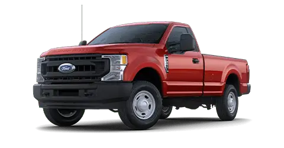

Utah's Weather: Preparing for the Drive
Utah weather varies greatly by season and region. Winters can be snowy and cold, especially in mountain areas, where snowfall impacts driving conditions. Salt Lake City and Provo see moderate winter conditions, but rural and mountainous areas can become challenging for drivers. In the summer, temperatures can reach the high 90s°F in the valleys. With these varying conditions, having a reliable AWD or 4x4 vehicle ensures you're prepared for snow in winter and the occasional dirt trail in summer.
To stay safe on Utah's roads, check weather forecasts regularly, and be mindful of mountain passes and canyon areas that can be hazardous in winter. Many drivers switch to winter tires or keep snow chains on hand during colder months for added security.
